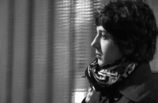

|
|
زهرا ابراهیمی: چرا باید فراموش شوم ؟ / چرا باید رفتار مسئولان و مردمان با او فراموش شود؟
پنج شنبه10 دی 1388

تغییر برای برابری - تلویزیون بی بی سی (برنامه 60 دقیقه) گفتگویی با زهرا ابراهیمی بازیگر جوانی داشته است که سه سال پیش پخش یک ویدئو درباره او، زندگی حرفه ای و عادی اش را دچار مخاطره و ضربه پذیر کرد .
گفتگوی او را با بی بی سی در لینک زیر و در دقیقه 43 ام ببنیید. گفته های او نشان می دهد که چقدر رفتار یک حکومت وجامعه می تواند مسری باشد و برهم تاثیر بگذارد.
آیا هنوز این فضا در جامعه ایران حاکم است ؟
برنامه 60 دقیقه